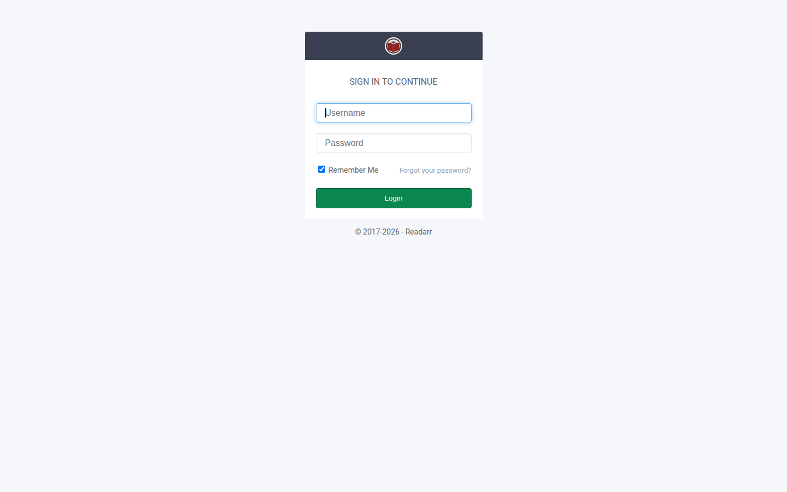

Readarr
Readarr
Sign in
After you set a username and password, the browser title is Login - Readarr.

- Enter your username in Username.
- Enter your password in Password.
- Leave Remember Me checked if you want the browser to keep the session (it is checked by default).
- Choose Login.
If the credentials are wrong, the form shows Incorrect Username or Password.
Forgot your password? on this screen links to the historical Servarr FAQ. It is not a local password-reset page in this rewrite.